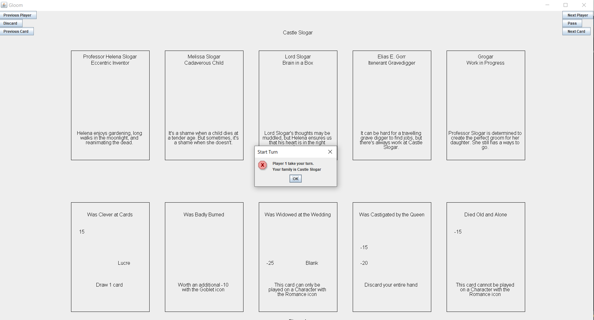
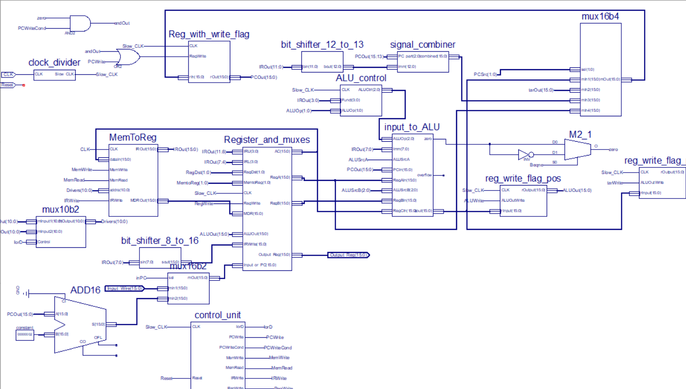
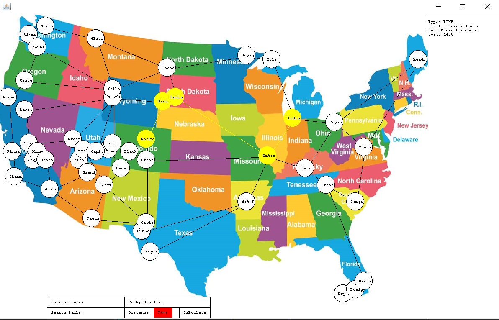
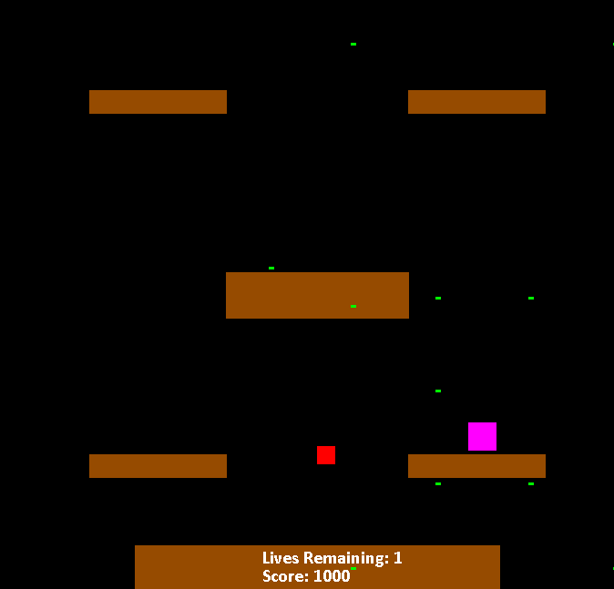

Portfolio
-
Gloom Board Game
Recreated the board game Gloom in Java. The team utilized Test Driven Development throughout all stages of the project and utilized the Gradle Build Tool.
-
Monster Manual Database

Created both frontend and backend for a database to store Dungeons and Dragons fifth edition monster statistics. The backend was a Microsoft SQL Server database using TSQL and the frontend was written in Java using Java.SQL.
-
16-bit Processor
Created a 16-bit processor able to calculate relative primes. The processor used a custom assembly language and a multicycle datapath. The processor used a hybrid accumulator and load/store design. Also created an assembler program capable of translating the custom machine language into machine code.
-
National Parks Trip Planner
The project used a graph to model a map of all American national parks. The user could enter a start and end point and would be given the shortest possible route for their trip. We implemented the pathing using Dijkstra's shortest path algorithm.
-
Arcade Game Project
Recreated Joust Arcade game in Java The project focused on using good object oriented programming to develop the parts of the game in multiple classes. The game had 5 levels with 3 different kind of enemies that acted and interacted with the player in different ways